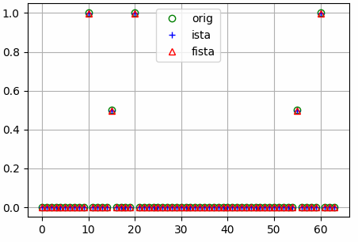
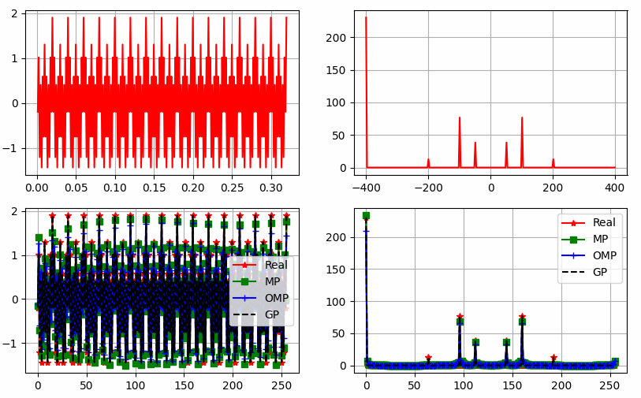

torchcs.recovery package¶
Submodules¶
torchcs.recovery.ista_fista module¶
- torchcs.recovery.ista_fista.fista(Y, Phi, niter=None, lambd=0.5, alpha=None, tol=1e-06, ssmode='cc')¶
Fast Iterative Shrinkage Thresholding Algorithm
Fast Iterative Shrinkage Thresholding Algorithm
\[{\bf Y} = {\bf \Phi}{\bf X} + \lambda \|{\bf X}\|_1 \]- Parameters
Y (Tensor) – Observation \({\bf Y} \in {\mathbb C}^{M\times L}\)
Phi (Tensor) – Observation matrix \({\bf \Phi} \in {\mathbb C}^{M\times N}\)
niter (int, optional) – The number of iteration (the default is None)
lambd (float, optional) – Regularization factor (the default is 0.5)
alpha (float, optional) – The update step (the default is None, which means auto computed, see
upstep())tol (float, optional) – The tolerance of error (the default is 1e-6)
ssmode (str, optional) – The type of softshrink function,
'cc'for complex-complex,'cr'for complex-real,'rr'for real-real.
- Returns
X (Tensor) – Reconstructed tensor \({\bf X} \in {\mathbb C}^{N\times L}\)
see
ista().
Examples
The results shown in the above figure can be obtained by the following codes.
import torchcs as tc import matplotlib.pyplot as plt m, n = 32, 64 x = th.zeros(n, 1) x[10] = x[20] = x[60] = 1 x[15] = x[55] = 0.5 Phi = th.randn(m, n) y = Phi.mm(x) Psi = tc.idctmtx(n) xista = ista(y, Phi, niter=None, lambd=0.05) xfista = fista(y, Phi, niter=None, lambd=0.05) plt.figure() plt.grid() plt.plot(x, 'go', markerfacecolor='none') plt.plot(xista, 'b+', markerfacecolor='none') plt.plot(xfista, 'r^', markerfacecolor='none') plt.legend(['orig', 'ista', 'fista']) plt.show()
{kind=link}
- torchcs.recovery.ista_fista.ista(Y, Phi, niter=None, lambd=0.5, alpha=None, tol=1e-06, ssmode='cc')¶
Iterative Shrinkage Thresholding Algorithm
Iterative Shrinkage Thresholding Algorithm
\[{\bf Y} = {\bf \Phi}{\bf X} + \lambda \|{\bf X}\|_1 \]- Parameters
Y (Tensor) – Observation \({\bf Y} \in {\mathbb C}^{M\times L}\)
Phi (Tensor) – Observation matrix \({\bf \Phi} \in {\mathbb C}^{M\times N}\)
niter (int, optional) – The number of iteration. (the default is None, which means Inf)
lambd (float, optional) – Regularization factor (the default is 0.5)
alpha (float, optional) – The update step (the default is None, which means auto computed, see
upstep())tol (float, optional) – The tolerance of error (the default is 1e-6)
ssmode (str, optional) – The type of softshrink function,
'cc'for complex-complex,'cr'for complex-real,'rr'for real-real.
- Returns
X (Tensor) – Reconstructed tensor \({\bf X} \in {\mathbb C}^{N\times L}\)
see
fista().
Examples
The results shown in the above figure can be obtained by the following codes.
import torchcs as tc import matplotlib.pyplot as plt m, n = 32, 64 x = th.zeros(n, 1) x[10] = x[20] = x[60] = 1 x[15] = x[55] = 0.5 Phi = th.randn(m, n) y = Phi.mm(x) Psi = tc.idctmtx(n) xista = ista(y, Phi, niter=None, lambd=0.05) xfista = fista(y, Phi, niter=None, lambd=0.05) plt.figure() plt.grid() plt.plot(x, 'go', markerfacecolor='none') plt.plot(xista, 'b+', markerfacecolor='none') plt.plot(xfista, 'r^', markerfacecolor='none') plt.legend(['orig', 'ista', 'fista']) plt.show()
- torchcs.recovery.ista_fista.upstep(Phi)¶
computes step size
The update step size is computed by
\[\alpha = \frac{1}{{\rm max}(|\lambda|)} \]where \(\lambda\) is the eigenvalue of \({\bf \Phi}^H{\bf \Phi}\)
- Parameters
Phi (Tensor) – The observation matrix.
- Returns
The computed updation step size
- Return type
scalar
torchcs.recovery.matching_pursuit module¶
- torchcs.recovery.matching_pursuit.gp()¶
- torchcs.recovery.matching_pursuit.mp(X, D, K=None, norm=[False, True], tol=1e-06, mode=None, islog=False)¶
Matching Pursuit
\[x = Dz \]\[({\bm D}_{{\mathbb I}_t}^T{\bm D}_{{\mathbb I}_t})^{-1} \]to avoid matrix singularity
\[({\bm D}_{{\mathbb I}_t}^T{\bm D}_{{\mathbb I}_t} + C {\bm I})^{-1} \]where, \(C > 0\).
- Parameters
X (torch tensor) – signal vector or matrix, if \({\bm X}\in{\mathbb R}^{M\times L}\) is a matrix, then apply OMP on each column
D (torch tensor) – overcomplete dictionary ( \({\bm D}\in {\mathbb R}^{M\times N}\) )
- Keyword Arguments
K (int) – The sparse degree (default: size of \({\bm x}\))
norm (list of bool) – The first element specifies whether to normalize data, the second element specifies whther to normalize dictionary. If True, will be normalized by subtracting the mean and dividing by the l2-norm. (default: [False, True])
tol (float) – The tolerance for the optimization (default: {1.0e-6})
mode (str) – Complex mode or real mode,
'cc'for complex–>complex,'cr'for complex–>real,'rr'for real–>realislog (boolean) – Show more log info.
- torchcs.recovery.matching_pursuit.omp(X, D, K=None, C=1e-06, norm=[False, False], tol=1e-06, method='pinv', mode=None, device='cpu', islog=False)¶
Orthogonal Matching Pursuit
ROMP add a small penalty factor \(C\) to
\[x = Dz \]\[({\bm D}_{{\mathbb I}_t}^T{\bm D}_{{\mathbb I}_t})^{-1} \]to avoid matrix singularity
\[({\bm D}_{{\mathbb I}_t}^T{\bm D}_{{\mathbb I}_t} + C {\bm I})^{-1} \]where, \(C > 0\).
- Parameters
X (torch tensor) – signal vector or matrix, if \({\bm X}\in{\mathbb R}^{M\times L}\) is a matrix, then apply OMP on each column
D (torch tensor) – overcomplete dictionary ( \({\bm D}\in {\mathbb R}^{M\times N}\) )
- Keyword Arguments
K (int) – The sparse degree (default: size of \({\bm x}\))
C (float) – The regularization factor (default: 1.0e-6)
norm (list of bool) – The first element specifies whether to normalize data, the second element specifies whther to normalize dictionary. If True, will be normalized by subtracting the mean and dividing by the l2-norm. (default: [False, False])
tol (float) – The tolerance for the optimization (default: {1.0e-6})
method (str) – The method for solving new sparse coefficients.
mode (str) – Complex mode or real mode,
'cc'for complex–>complex,'cr'for complex–>real,'rr'for real–>real.islog (boolean) – Show more log info.
Examples
The results shown in the above figure can be obtained by the following codes.
import torch as th import torchcs as tc import matplotlib.pyplot as plt seed = 2021 f0, f1, f2, f3 = 50, 100, 200, 400 Fs = 800 Ts = 0.32 Ns = int(Ts * Fs) R = 2 K = 7 t = th.linspace(1, Ns, Ns).reshape(Ns, 1) / Fs pit2 = 2. * th.pi * t x = 0.3 * th.cos(pit2 * f0) + 0.6 * th.cos(pit2 * f1) + 0.1 * th.cos(pit2 * f2) + 0.9 * th.cos(pit2 * f3) f = th.linspace(-Fs / 2., Fs / 2., Ns).reshape(Ns, 1) X = th.fft.fftshift(th.fft.fft(x, dim=0)) M = Ns N = int(Ns * R) Psi = tc.odctdict((M, N)) # Psi = tc.idctmtx(N) z, _ = tc.mp(x, Psi, K=K, norm=[False, False], tol=1.0e-6, islog=False) xmp = Psi.mm(z) Xmp = th.fft.fftshift(th.fft.fft(xmp, dim=0)) z, _ = tc.omp(x, Psi, K=K, C=1e-1, norm=[False, False], tol=1.0e-6, method='pinv', islog=False) xomp = Psi.mm(z) Xomp = th.fft.fftshift(th.fft.fft(xomp, dim=0)) xgp = x Xgp = X plt.figure() plt.subplot(221) plt.grid() plt.plot(t, x, '-r') plt.subplot(222) plt.grid() plt.plot(f, X.abs(), '-r') plt.subplot(223) plt.grid() plt.plot(x, '-*r') plt.plot(xmp, '-sg') plt.plot(xomp, '-+b') plt.plot(xgp, '--k') plt.legend(['Real', 'MP', 'OMP', 'GP']) plt.subplot(224) plt.grid() plt.plot(X.abs(), '-*r') plt.plot(Xmp.abs(), '-sg') plt.plot(Xomp.abs(), '-+b') plt.plot(Xgp.abs(), '--k') plt.legend(['Real', 'MP', 'OMP', 'GP']) plt.show()
{kind=link}